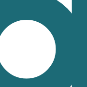

Brand mark
The identity, and it is not a picture of a d. One letterform is drawn on a 100 unit square, deliberately larger than any frame that will ever hold it, and a window is cut out of it. The letter never changes size relative to itself; the window does. This file draws the first of three windows, and it is the only one the product carries.
Anatomy
Two boxes and no content slot, which is what makes it an atom: a field that carries the corner, and a letter painted through a mask. Everything below is drawn by design/system/components/brand-mark.css through the same entry point a product screen loads, so this page cannot drift from the screens.
The live specimen stands on its own ground. This component exists inside one host, the app bar's lockup, and its field is --bg-surface, which is also the bar. Shown on a blank canvas it would be a paper tile nobody puts anywhere. Shown here it is what a person actually sees on all 28 coloured screens: a petrol letter with a cropped corner, on the bar it belongs to.
.brandthe frame: 22px square,overflow: hidden, and a field of--bg-surface. The clip is load-bearing rather than tidy, because the letter is bigger than the frame by construction and crosses every cornerborder-radius23.4%, a ratio and not a token, and this is the one number on the page that had to escape the scale. Rule 3 of the mark is that the corner is a share of the short side. A length would freeze it at one size:--radius-xsis 6px and would be 1px off at 22px and 36px off at 180.brand::beforethe letter:--text-actionpainted through a mask, the same machinery app-bar.css uses for the chevron and the cross. One difference, and it is deliberate: those two takecurrentColorand are free in both themes, this one names the role, because the letter is petrol for being the brand and not for inheriting the ink of whatever holds itviewBoxthe SVG does the cropping. The drawing is a circle of radius 23 at (40,60) with a 15 unit wall, and a stem 15 wide from y6 to y90. Crop A is the window x26 y34, 46 by 46, and the mask image is written withviewBox='26 34 46 46', so the region is the file. A new crop is a new viewBox on the same four numbers of geometry, which enforces rule 1, the letter is never redrawn, in the file rather than by disciplinemask-size100% 100%and notcontain: the image is already exactly the window, socontainwould letterbox a square inside a square and cost a sub-pixel edge for nothing
Every specimen on this page that includes the lockup is inside a real app bar, and the first draft of the page was not. The lockup's own layout, display: inline-flex with an 8px gap, is declared in app-bar.css as .app .appbar .lockup, because it stands in one host and the inventory's rule is that a one-off is written down rather than promoted. Put the same markup on a bare stage and the selector does not match: the wrapper falls back to a plain span, the mark keeps display: block, and the word drops onto a second line. Caught in a screenshot at 1280 and fixed by giving the specimens their host.
It is worth keeping rather than working around, because it is the "one host" decision proving itself out loud. A component that renders correctly on a blank canvas is a component; this is a slot. The moment the share card carries the second one, the rule moves to a file of its own and this stops being true.
Variants and sizes
The axis is the window, and the concept locked three values on it. Only one of them is in this system, and the other two are listed rather than built, because a variant the product does not carry is an invention with a nice reason attached.
| Window The tighter the crop, the more abstract the mark. A is still a letter, B is a shape with a memory of one, C is a brand colour with an edge in it. Each is the right answer at a different distance from the person |
In the system | Where it stands |
|---|---|---|
A, the bowl .brand |
x26 y34, 46 sq radius 23.4% |
The only crop where the counter closes, so the only one that still reads as a letter to somebody who has never seen the brand. The app bar on all 28 coloured screens, and both exported icons |
| B, the joint | - | Locked at Concept for the wide surfaces: the share card's band, the empty state, the launch screen. Not built, and the reason is a count rather than a preference: the share card stands on 2 grey pages and 0 coloured ones, and the other two screens do not exist. It arrives with its first host |
| C, the stem | - | A field with one edge in it: the pattern, the avatar, the thing printed at 8mm. Not built, same reason, and it has no host anywhere in the product as designed today |
| A size modifier | - | Forbidden with a reason rather than missing. Mark sizes in this product are set by the CONTAINER, the way the merchant tile's five are, and there is exactly one container today. The other sizes of this mark exist as files rather than as CSS, which is what the concept page's own chain asked for |
The exported pair, and they are the same geometry. A favicon is fetched as its own document and cannot read a custom property from the page, so these two files carry the only literals of this brand outside a token file. All four are copied from tokens.css and none is chosen there. The dark pair is carried through prefers-color-scheme rather than dropped, because a role without a pair does not exist in this system and a browser tab strip is a ground like any other.


The touch icon has no corner, and that is the one place rule 3 does not apply. iOS masks a home screen icon with its own superellipse, so shipping a rounded square would put a corner inside a corner. The letter still leaves the frame on two sides, so rule 2 holds; rule 3's corner is the platform's here and nowhere else. It is 180px because that is what iOS asks for, and it carries the light values only, because Apple does not offer the icon a theme.
When to use it
Once per screen, in the app bar, beside the word. That is the whole of it today, and the narrowness is the point: the mark is chrome and it is ours. It says whose product this is, in the one place a person is not reading a number.
It is not the merchant tile, and the two are one grep apart. Logo, .logo, is DATA: it is the person's own Netflix rendered as Netflix, 111 places across 21 grey pages, and it changes with the row it sits in. This one is chrome, it is the same on every screen, and there is exactly one of it. They could not share a name for that reason, and the name that moved is this one, because .logo was there first and is worn 111 times.
Never below 16px, and never crop B or C at any small size. Rule 5: at favicon size the counter is the only thing holding the letter together, and A is the only window that has it. The system enforces the first half by having one size and no modifier, and the second half by not building B and C at all.
The mark is the fourth place petrol appears, and it is a named exception rather than a fourth job. D-Concept spends petrol on the primary action, the current selection and the trust line. The brand is beside those three and not among them: it is an identity and never an accent, and it therefore never appears inside a screen's content. The exception is recorded in docs/decisions.md and in CLAUDE.md, so the next person finds the reason and not just the colour.
The rule, and the anti-rule
Two petrol things beside each other is one too many. The mark is already carrying the colour, so the word takes the ink it inherits and nothing else. This is why brand-wordmark.css declares no colour at all: the rule is enforced by absence, which is the only way it cannot drift.
What shipped until 2026-08-12, and it is drawn here with the real class rather than a mock. It is not wrong so much as it is not a mark: at 16px in a bar there is nothing to recognise at a glance and nothing to put on a home screen. The favicon problem is the honest test, and a wordmark has no answer to it.
Rule 2, and it is what separates this from a logo in a box. Every window has to be crossed: the moment the whole letter fits inside its frame the system stops being a crop and becomes a picture that has to be redrawn for every new shape. Crop A crosses on the left, the bottom and the right.

Rule 4: two colours, and one of them is the ground. Swap them and the letter stops being the mark, because the counter becomes a dot and the frame becomes the drawing. Beside it here is a merchant tile at 36px, the component this one is most often mistaken for: that square is allowed any colour in the world, because the colour is the merchant's and not ours.
One contradiction in the source, resolved by the drawings. The concept page's rule 4 reads "inverted only on the phone icon", and the plate two sections above it draws the inverse and labels it "not used", with the reason: swap the roles and the mark stops being the mark. The home screen plate on the same page then draws the phone icon not inverted. Two of the three say the same thing and the drawings are the living truth, so the system carries no inverse and the exported touch icon is the paper field with the petrol letter. Recorded here rather than picked in silence, so that whoever wrote the sentence can overrule the drawing if the sentence was the decision.
States
None, and that is a finding rather than a gap. The mark is never a target. It sits inside a lockup that is not a link on any of the 28 screens, and it carries aria-hidden="true" because the word beside it already says the name in text: a screen reader announcing an empty span before "Tendd" is noise. No :hover, no :focus-visible and no [disabled] are declared.
If the lockup becomes the way home at stage 12, the ring belongs to the anchor and not to this square, the same way the subscription row's hover is the row's rule and not the merchant tile's. The mark would gain nothing and the link would gain a component it does not need.
The technical half
| Reads | Which token | Growing from |
|---|---|---|
| the letter | --text-action | --petrol, and --petrol-dark in the dark theme. 6.2:1 light and 6.8:1 dark on the field, both measured at stage 08 step 3 and both against the 4.5:1 ink threshold, with the size threshold unused |
| the field | --bg-surface | --paper, and --paper-dark. Inside the app bar the field IS the bar, so what a person sees is rule 4 working: two colours, one of them the ground |
| the corner | none, and it cannot be one | 23.4%, a ratio. The rule is a share of the short side, so any length would hold at one size and break at the next |
| the size | none | 22px, a literal, on the same list as the merchant tile's five: mark sizes in this product are set by the container, and no container size is a token |
| states | none | not interactive, see above |
WCAG 1.4.3 exempts a logotype outright and this system does not use the exemption. A mark nobody can see is still a mark nobody can see, so the letter is measured against the ink threshold like any other glyph in the product, in both themes.
Lives in design/system/components/brand-mark.css. Stands on 28 coloured screens and 0 grey ones: wireframes/ is frozen and had no mark to freeze, which is the one place in this system where the grey corpus is behind the coloured one rather than ahead of it. Coloured screens carrying it: every one of the 28, starting at Home. Its two exported cuts are favicon.svg and apple-touch-icon.png, both at the repository root, linked from all 132 pages of the project outside wireframes/. The frozen 56 get no icon, which is correct: they are the structure contract and they are not the product.
<span class="lockup">
<span class="brand" aria-hidden="true"></span>
<span class="wordmark">Ten<span class="dd">dd</span></span>
</span>
The empty span is the component. It has no content slot because it has no content: the drawing is a mask and the field is a background, and anything written inside it would be clipped by the frame and painted over by the letter.